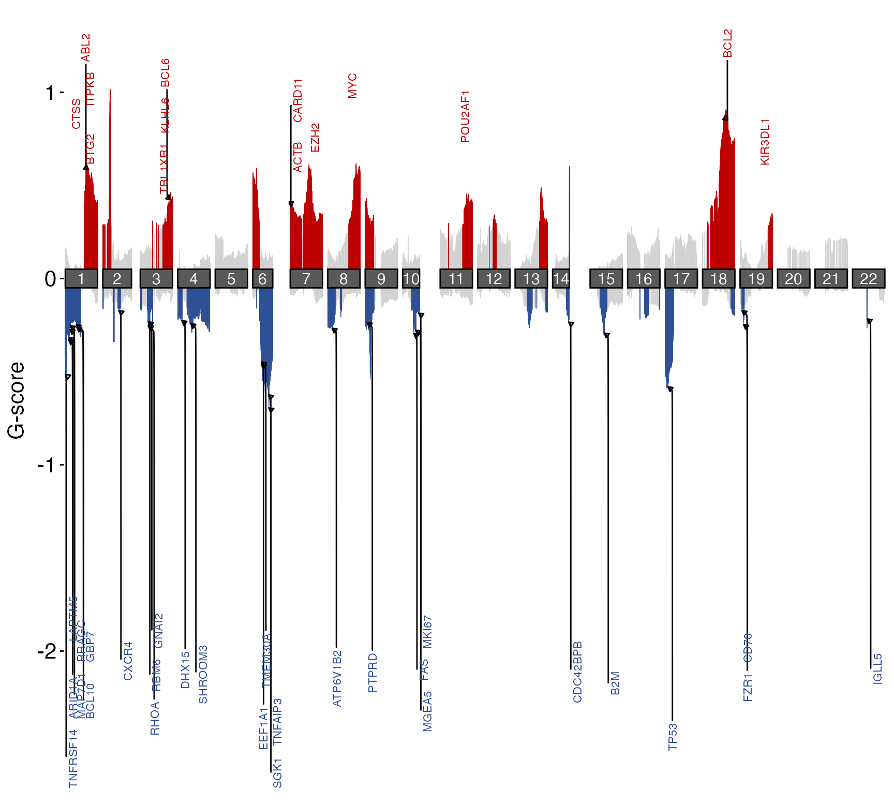
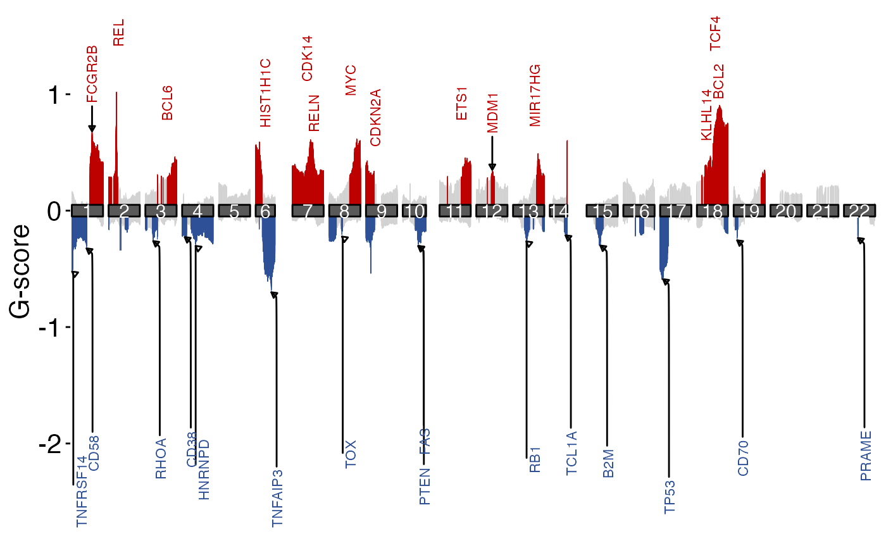

prettyChromoplot.RdUse GISTIC2.0 scores output to reproduce maftools::chromoplot with more flexibility.
prettyChromoplot(
scores_path,
scores_df,
labels_bed,
default_gene_set = "oncogenes",
genome_build,
cutoff = 0.5,
adjust_amps = 0.5,
adjust_dels = 2.75,
label_size = 3,
force_pull = 0,
segment.curvature = 0.25,
segment.ncp = 4,
segment.angle = 25,
hide_neutral = FALSE,
verbose = FALSE
)Output file scores.gistic from the run of GISTIC2.0
Optional. Instead of specifying scores_path pass a pre-loaded scores file as a data frame using scores_df
Optional. A bed_data object specifying the regions to apply labels.
Defines the chr prefix and the coordinates of the default genes to label if `genes_to_label` is not provided. Automatically set if labels_bed is provided
Optional. Used to determine which regions to color as aberrant. Must be float in the range between 0 and 1. The higher the number, the less regions will be considered as aberrant. The default is 0.5.
Optional. The value of G-score for highest amplification peak will be multiplied by this value to determine how far up the gene label will be displayed. Default 0.5.
Optional. The value of G-score for highest deletion peak will be multiplied by this value to determine how far down the gene label will be displayed. Default 2.75.
Optional. The font size for the gene label to be displayed. Default 3.
Optional. How strong the gene name label will be pulled towards a data point. Default 0 (no pulling).
Optional. Indicates whether arrow to the data point should be curved. Accepts numeric value, where negative is for left-hand and positive for right-hand curves, and 0 for straight lines. Default 0.25.
Optional. Indicates number of control points to make a smoother curve. Higher value allows for more flexibility for the curve. Default 4.
Optional. Numeric value in the range 0-180, where less than 90 skews control points of the arrow from label to data point toward the start point. Default 25.
Optional. Set to TRUE to hide all neutral (insignificant) regions instead of plotting them in grey
plot
This function uses GISTIC2.0 scores to create a chromosome plot, based on a similar plotting function from `maftools`. The only required parameter for this function is `scores`, which is the path to a file with GISTIC2.0 scores. Other parameters are all optional. For a detailed explanation of how to use these, refer to the parameter descriptions.
# Bundled output from a GISTIC run using grch37 results
gistic_scores = system.file("extdata",
"scores.gistic",
package="GAMBLR.viz")
suppressMessages(
suppressWarnings({
# Automatic labeling of gene sets for a given pathology
prettyChromoplot(scores_path = gistic_scores,
default_gene_set = "FL",
genome_build = "grch37")
}))
#> Warning: ggrepel: 17 unlabeled data points (too many overlaps). Consider increasing max.overlaps

## Specifying your own gene list for labeling
genes = c(
"MYC","FCGR2B","TNFRSF14","FAS","PTEN","B2M",
"RB1","TCL1A","CD70","TOX","PRAME","CD38",
"BCL2","KLHL14","TCF4","REL","BCL6",
"SMARCA4","CDKN2A","RHOA","HIST1H1C",
"TNFAIP3","TP53","CDK14","RELN","ETS1",
"MDM1","MIR17HG","CD58","HNRNPD"
)
gene_bed = select(grch37_gene_coordinates,-1) %>%
#remove ensembl ID column
dplyr::filter(hugo_symbol %in% genes) %>%
#keep genes of interest
mutate(length = end - start,mid = start + length/2) %>%
mutate(start = mid,end=start+1) %>%
unique() %>%
#convert to bed_data format
create_bed_data(genome_build = "grch37")
suppressMessages(
suppressWarnings({
prettyChromoplot(scores_path = gistic_scores,
labels_bed = gene_bed)
}))

#NOTE: genome build is inferred from gene_bed
if (FALSE) {
# GISTIC run using hg38 data
prettyChromoplot(scores_path=gistic_scores,
cutoff = 0.9,
label_size=2,
adjust_amps = 0.5,
adjust_dels = 0.8,
genome_build="hg38",
hide_neutral = T)
}